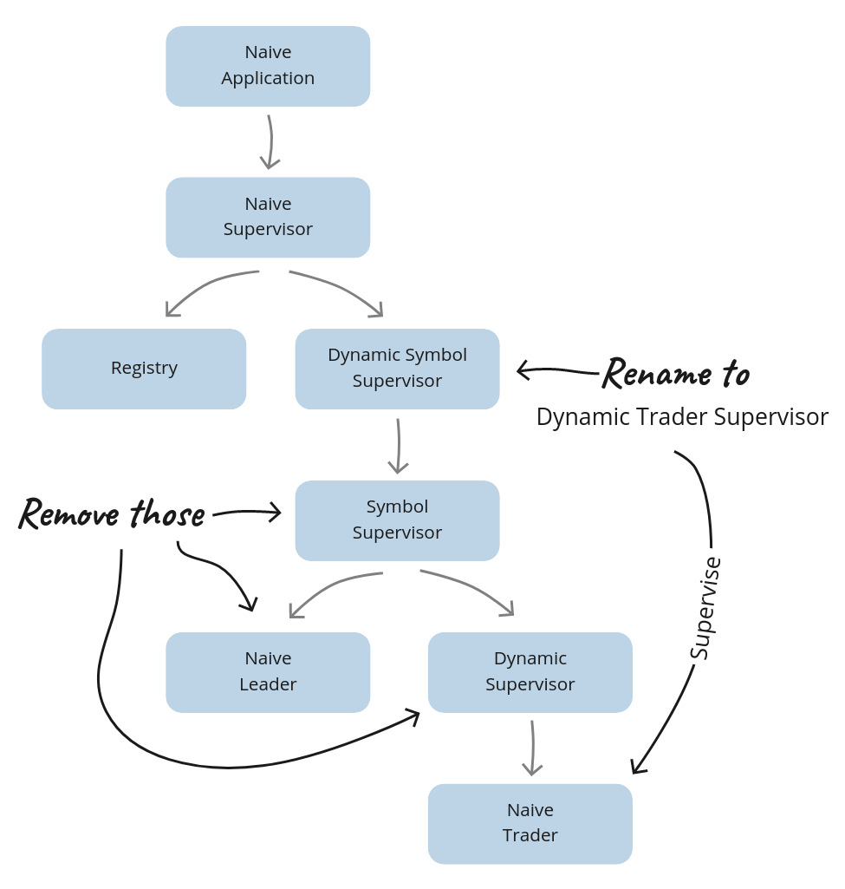

Chapter 20 Idiomatic trading strategy
20.1 Objectives
- Following the OHLC footsteps
- Simplifying the Naive supervision tree
- Supporting multiple positions
- Retrofitting the “shutdown” functionality
- Updating the Strategy to handle rebuys
- Fetching active positions
- Tidying up
20.2 Following the OHLC footsteps
In the last chapter, we looked into the idiomatic Elixir. We refactored our initial implementation of OHLC aggregation to maximise the amount of pure code by limiting the number of processes running per symbol. It was a nice standalone functionality to showcase the concept.
In this chapter, we will look into how could we refactor our naive strategy’s code to achieve the same result. At this moment, the naive strategy uses multiple processes per symbol, including Trader processes, dedicated Leader and SymbolSupervisor. We will update the Trader process to be responsible for multiple trades(we will call them “positions” from now on) on a single symbol. This way, we will have a single Trader process per symbol as well, as we will get rid of both the Leader(we will move rebuy/shutdown logic to our strategy - where it belongs) and the SymbolSupervisor:

There are multiple benefits of simplifying the supervision hierarchy, and we will look at them closely as we refactor the code - let’s get to it.
20.3 Simplifying the Naive supervision tree
Starting from the top of the tree, the first module we need to update will be the Naive.DynamicSymbolSupervisor module.
20.3.1 The Naive.DynamicTraderSupervisor module
The filename needs to be updated to dynamic_trader_supervisor.ex and the module name to Naive.DynamicTraderSupervisor.
Next, there’s the @registry attribute that we will rename to :naive_traders.
Finally, update the alias to the Naive.SymbolSupervisor to the Naive.Trader and use it inside the start_child/1 function:
20.3.2 The Naive module
The Naive module heavily depends on the Naive.DynamicSymbolSupervisor(now called the
Naive.DynamicTraderSupervisor), we need to update all the references to it:
20.3.3 The Naive.Supervisor module
The Naive.Supervisor supervises the Naive.DynamicSymbolSupervisor(now called the
Naive.DynamicTraderSupervisor) and the registry that stores the traders’ PIDs - we need to update both:
# /apps/naive/lib/naive/supervisor.ex
alias Naive.DynamicTraderSupervisor # <= updated
@registry :naive_traders # <= updated
...
children = [
{Registry, [keys: :unique, name: @registry]},
{DynamicTradersSupervisor, []}, # <= updated
{Task,
fn ->
DynamicTradersSupervisor.autostart_workers() # <= updated
end}
]20.3.4 The Naive.Trader module
The final module to be updated will be the Naive.Trader. It needs to register process’ PID inside the Registry:
# /apps/naive/lib/naive/trader.ex
@registry :naive_traders # <= added
...
def start_link(%State{} = state) do
symbol = String.upcase(state.symbol) # <= updated
GenServer.start_link(
__MODULE__,
state,
name: via_tuple(symbol) # <= updated
)
end
...
defp via_tuple(symbol) do
{:via, Registry, {@registry, symbol}}
endThat finishes the changes to the supervision tree - the Naive.Leader and the Naive.SymbolSupervisor aren’t used anymore. At this moment, our codebase won’t work as we need to retrofit the functionality that the Naive.Leader was offering into our Naive.Trader and Naive.Strategy modules, which we will focus on in the next section.
20.4 Supporting multiple positions
The current State struct inside the Naive.Trader was geared toward a single trade cycle. As we now need to handle multiple positions inside a single Trader process, we will need to update this struct. We will start by moving the current State struct from the Naive.Trader into the Naive.Strategy and renaming it to Position:
# /apps/naive/lib/naive/strategy.ex
defmodule Naive.Strategy do
...
defmodule Position do
@enforce_keys [
# keys copied from `Naive.Trader.State` struct
]
defstruct [
# keys copied from `Naive.Trader.State` struct
]
endThis will break all the references to Naive.Trader.State inside the Naive.Strategy, which we need to update to Position(and remove the alias of Naive.Trader.State):
# /apps/naive/lib/naive/strategy.ex
...
def execute(%TradeEvent{} = trade_event, %Position{} = position do
generate_decision(trade_event, position)
|> execute_decision(position)
end
...
def generate_decision(
%TradeEvent{
...
},
%Position{ # <= in all 8 clauses
...
defp execute_decision(
{.... # decision },
%Position{ # <= updated
...
} = position # <= updated
) do
...
new_position = %{position | buy_order: order} # <= updated
@leader.notify(:trader_state_updated, new_position) # <= updated
{:ok, new_position} # <^= similar changes in all execute_decisionWe will ignore the fact that we are still calling the @leader and still dealing with a single position(inside the strategy) - we will fix that in the following section. One step at a time ;)
As we are already changing strategy to work with positions, we will update all the logger messages:
# /apps/naive/lib/naive/strategy.ex
defp execute_decision(
{:place_buy_order, price, quantity},
...
) do
) do
@logger.info(
"Position (#{symbol}/#{id}): " <>
"Placing a BUY order @ #{price}, quantity: #{quantity}"
) # ^ updated message
...
defp execute_decision(
{:place_sell_order, sell_price},
...
) do
@logger.info(
"Position (#{symbol}/#{id}): The BUY order is now filled. " <>
"Placing a SELL order @ #{sell_price}, quantity: #{quantity}"
) # ^ updated message
...
defp execute_decision(
:fetch_buy_order,
...
) do
@logger.info("Position (#{symbol}/#{id}): The BUY order is now partially filled")
... # ^^^ updated message
defp execute_decision(
:exit,
...
) do
@logger.info("Position (#{symbol}/#{id}): Trade cycle finished")
... # ^^^ updated message
defp execute_decision(
:fetch_sell_order,
...
) do
@logger.info("Position (#{symbol}/#{id}): The SELL order is now partially filled")
... # ^^^ updated message
defp execute_decision(
:rebuy,
...
) do
@logger.info("Position (#{symbol}/#{id}): Rebuy triggered")
... # ^^^ updated messageOur code is still far from working, but we are incrementally updating it to work with multiple positions.
20.4.1 Initialization
At this moment, the Naive.Trader expects the state to be injected on start (using the start_link/1 function). We were able to do that because the Naive.Leader was fetching the settings and building the fresh trader state.
First, let’s update the State of the Naive.Trader - it will now hold the symbol’s settings(previously held in the leader) and list of positions(list of the Naive.Strategy.Position structs):
# /apps/naive/lib/naive/trader.ex
defmodule State do
@enforce_keys [:settings, :positions]
defstruct [:settings, positions: []]
endNow we need to update the start_link/1 and init/1 functions as well as add the handle_continue/2 callback to fetch settings and store them together with an initial position in the state:
# /apps/naive/lib/naive/trader.ex
alias Naive.Strategy
...
def start_link(symbol) do # <= now expecting symbol
symbol = String.upcase(symbol) # <= updated
GenServer.start_link(
__MODULE__,
symbol, # <= updated
name: via_tuple(symbol)
)
...
def init(symbol) do # <= updated
@logger.info("Initializing new trader for #{symbol}") # <= updated
@pubsub_client.subscribe(
Core.PubSub,
"TRADE_EVENTS:#{symbol}"
)
{:ok, nil, {:continue, {:start_position, symbol}}} # <= updated
end
def handle_continue({:start_position, symbol}, _state) do
settings = Strategy.fetch_symbol_settings(symbol)
positions = [Strategy.generate_fresh_position(settings)]
{:noreply, %State{settings: settings, positions: positions}}
end # ^^^ new function/callbackAs the Naive.Trader starts, it returns the {:continue, ...} tuple from the init/1 function. This will cause the handle_continue/2 callback to be called asynchronously. Inside it, we fetch settings and add a single fresh position to the list of positions - both stored in Trader’s state.
Both functions inside the handle_continue/2 callback previously were part of the Naive.Leader - we need to move them across to the Naive.Strategy:
# /apps/naive/lib/naive/strategy.ex
alias Naive.Schema.Settings
...
@repo Application.compile_env(:naive, :repo)
...
def fetch_symbol_settings(symbol) do
exchange_info = @binance_client.get_exchange_info()
db_settings = @repo.get_by!(Settings, symbol: symbol)
merge_filters_into_settings(exchange_info, db_settings, symbol)
end
def merge_filters_into_settings(exchange_info, db_settings, symbol) do
symbol_filters =
exchange_info
|> elem(1)
|> Map.get(:symbols)
|> Enum.find(&(&1["symbol"] == symbol))
|> Map.get("filters")
tick_size =
symbol_filters
|> Enum.find(&(&1["filterType"] == "PRICE_FILTER"))
|> Map.get("tickSize")
step_size =
symbol_filters
|> Enum.find(&(&1["filterType"] == "LOT_SIZE"))
|> Map.get("stepSize")
Map.merge(
%{
tick_size: tick_size,
step_size: step_size
},
db_settings |> Map.from_struct()
)
end
def generate_fresh_position(settings, id \\ :os.system_time(:millisecond)) do
%{
struct(Position, settings)
| id: id,
budget: D.div(settings.budget, settings.chunks),
rebuy_notified: false
}
endInside the above code, we modified the fetch_symbol_settings/1 function to fetch settings from binance and DB first and then progress with the “pure” part. This update allows us to test most of the logic easily without using mocks.
The generate_fresh_position/2 was previously called fresh_trader_state/1 inside the Naive.Leader. It had an id assigned inside the function based on the current system time. That made it a bit more difficult to test as we don’t know what should we expect there as a value. By moving the id to the arguments and assigning the current time there, we are now able to test it by passing our dummy value.
We are now using @repo inside the Naive.Strategy so we need to add it to configuration files(including test configuration):
20.4.2 Parallelising the strategy
We can now move on to the strategy, but first, let’s update the Naive.Trader to pass positions and settings separately:
# /apps/naive/lib/naive/trader.ex
def handle_info(%TradeEvent{} = trade_event, %State{} = state) do
case Naive.Strategy.execute(trade_event, state.positions, state.settings) do # <= updated
{:ok, updated_positions} -> # <= updated
{:noreply, %{state | positions: updated_positions}} # <= updated
:exit ->
{:stop, :normal, state}
endWe need all the positions to iterate through them, deciding and executing appropriate actions. The settings will be used inside the strategy later, but we will pass it on now to avoid going back and forward later.
Additionally, we updated the case match to expect a list of updated positions which we will assign to the Trader’s state.
Now we can modify the Naive.Strategy to handle multiple positions:
# /apps/naive/lib/naive/strategy.ex
def execute(%TradeEvent{} = trade_event, positions, settings) do
generate_decisions(positions, [], trade_event, settings)
|> Enum.map(fn {decision, position} ->
Task.async(fn -> execute_decision(decision, position, settings) end)
end)
|> Task.await_many()
|> then(&parse_results/1)
endWe need to write most of the functions used above, but we can already see the idea. We will map each of the decisions that we generate to async tasks that execute them. Next, we wait for all of them to finish and parse the results.
First, we are calling a new function generate_decisions/4, which is a recursive function on top of the existing generate_decision/2:
# /apps/naive/lib/naive/strategy.ex
def generate_decisions([], generated_results, _trade_event, _settings) do
generated_results
end
def generate_decisions([position | rest] = positions, generated_results, trade_event, settings) do
current_positions = positions ++ (generated_results |> Enum.map(&elem(&1, 0)))
case generate_decision(trade_event, position, current_positions, settings) do
decision ->
generate_decisions(
rest,
[{decision, position} | generated_results],
trade_event,
settings
)
end
endAt this moment, the generate_decisions/4 can look like overengineered Enum.map/2 function, but we are actually preparing the ground for the consequent updates later in this chapter(to get the rest of the functionality running).
It’s important to note that we are now passing four arguments into the generate_decision function - we added current_positions and settings - those will be required in the further updates as it was mentioned above. At this moment though, we will update all the generate_decision/2 clauses to include two additional arguments:
# /apps/naive/lib/naive/strategy.ex
def generate_decision(
%TradeEvent{...},
%Position{
...
},
_positions, # <= add this 8 times
_settings # <= add this 8 times
) doNow back to the main execute/3 function where we are calling execute_decision/3, which we need to update as well(all clauses):
# /apps/naive/lib/naive/strategy.ex
defp execute_decision(
{...},
%Position{
...
} = position,
_settings # <= added 7 times
) doThe final function that gets called from the execute/3 function is parse_results/1, which will aggregate all the results into a single tuple:
# /apps/naive/lib/naive/strategy.ex
def parse_results([_ | _] = results) do
results
|> Enum.map(fn {:ok, new_position} -> new_position end)
|> then(&{:ok, &1})
endAt this moment, we should be able to run our code:
$ iex -S mix
...
iex(1)> Naive.start_trading("XRPUSDT")
...
iex(2)> Streamer.start_streaming("XRPUSDT")
21:29:17.998 [info] Starting streaming XRPUSDT trade events
...
21:29:21.037 [info] Position (XRPUSDT/1651696014179): Placing a BUY order @ 0.64010000,
quantity: 31.00000000
21:29:21.037 [error] Task #PID<0.10293.0> started from #PID<0.480.0> terminating
** (stop) exited in: GenServer.call(:"Elixir.Naive.Leader-XRPUSDT"...So we have a trader that start and places a buy order but then it tries to update the leader with it’s new state - we can update the execute_decision/3 function to drop the updates(in all of the clauses):
# /apps/naive/lib/naive/strategy.ex
defp execute_decision(
...
) do
...
# convert the below:
new_position = %{position | buy_order: order}
@leader.notify(:trader_state_updated, new_position)
{:ok, new_position}
# to:
{:ok, %{position | buy_order: order}}
endApply similar changes to all the clauses of the execute_decision/3 to get rid of the references to the @leader - remember to remove the module’s attribute as well, as we won’t need it anymore.
Important note - one of those references to the @leader will be the notification that rebuy was triggered:
At this moment, remove that reference as well. We will get back to the rebuy functionality in the next section.
We can now rerun our code:
$ iex -S mix
...
iex(1)> Streamer.start_streaming("ETHUSDT")
...
iex(2)> Naive.start_trading("ETHUSDT")
...
21:59:19.836 [info] Position (ETHUSDT/1651697959836): Placing a BUY order @ 2945.31000000,
quantity: 0.06790000
21:59:46.997 [info] Position (ETHUSDT/1651697959836): The BUY order is now partially
filled
21:59:46.997 [info] Position (ETHUSDT/1651697959836): The BUY order is now filled.
Placing a SELL order @ 2947.66000000, quantity: 0.06790000
22:00:21.631 [info] Position (ETHUSDT/1651697959836): The SELL order is now partially
filled
22:00:21.734 [info] Position (ETHUSDT/1651697959836): Trade cycle finished
22:00:21.737 [error] GenServer {:naive_traders, "ETHUSDT"} terminating
** (FunctionClauseError) no function clause matching in anonymous fn/1 in
Naive.Strategy.parse_results/1
(naive 0.1.0) lib/naive/strategy.ex:56: anonymous fn(:exit) in
Naive.Strategy.parse_results/1We can see that our trader process can now go through the whole trade cycle, but it fails to start a new position after the first trade cycle finishes and returns :exit.
To fix this issue, we need to return :finished instead of :exit from the generate_decision/3 clause responsible for matching end of the trade cycle:
# /apps/naive/lib/naive/strategy.ex
def generate_decision(
%TradeEvent{},
%Position{
sell_order: %Binance.OrderResponse{
status: "FILLED"
}
},
_positions,
_settings
) do
:finished # <= updated
endThis decision will end up inside the execute_decision/3 where previously we were returning :exit atom, which was causing an error - let’s move this clause to be the last clause and update its body to generate a fresh state instead of returning a dummy atom:
# /apps/naive/lib/naive/strategy.ex
defp execute_decision(
:finished, # <= previously :exit; updated
%Position{
id: id,
symbol: symbol
},
settings # <= now used
) do
new_position = generate_fresh_position(settings) # <= added
@logger.info("Position (#{symbol}/#{id}): Trade cycle finished")
{:ok, new_position} # <= updated
endAt this moment, our trader process should be able to run across multiple trade cycles one after another:
$ iex -S mix
...
iex(1)> Streamer.start_streaming("ETHUSDT")
...
iex(2)> Naive.start_trading("ETHUSDT")
...
22:46:46.568 [info] Position (ETHUSDT/1651697959836): Trade cycle finished
22:46:46.577 [info] Position (ETHUSDT/1651697959836): Placing a BUY order @ 2945.31000000,
quantity: 0.06790000This finishes direct changes related to making the trader/strategy work with multiple positions, but it lacks all the features that the Naive.Leader offered. We will now iterate on this code to bring that missing functionality.
20.5 Retrofitting the “shutdown” functionality
Previously, the shutdown logic was scattered around in multiple places inside the Naive.Leader, for example, when the rebuy was triggered - making sure that new Trader processes won’t get started in the “shutdown” state.
Now, we have an opportunity to make the shutdown functionality part of our strategy.
We will start by modifying the DynamicTraderSupervisor where we will update the shutdown_worker/1 function to call the Naive.Trader instead of the Naive.Leader:
# /apps/naive/lib/naive/dynamic_trader_supervisor.ex
def shutdown_worker(symbol) when is_binary(symbol) do
Logger.info("Shutdown of trading on #{symbol} initialized")
{:ok, settings} = update_status(symbol, "shutdown")
Trader.notify(:settings_updated, settings) # <= updated
{:ok, settings}
endNow, the Trader will handle updating the settings, which we will add next, but before we do that, we should move the update_status/2 function into the Naive.Strategy as it will be used from both the DynamicTraderSupervisor and the Naive.Strategy:
# /apps/naive/lib/naive/strategy.ex
def update_status(symbol, status) # <= updated to public
when is_binary(symbol) and is_binary(status) do
@repo.get_by(Settings, symbol: symbol) # <= updated to use @repo
|> Ecto.Changeset.change(%{status: status})
|> @repo.update() # <= updated to use @repo
endNow we need to update the DynamicTraderSupervisor module to call the update_status/2 from the Naive.Strategy module:
# /apps/naive/lib/naive/dynamic_trader_supervisor.ex
alias Naive.Strategy
...
def start_worker(symbol) do
...
Strategy.update_status(symbol, "on") # <= updated
..
def stop_worker(symbol) do
...
Strategy.update_status(symbol, "off") # <= updated
...
def shutdown_worker(symbol) when is_binary(symbol) do
...
{:ok, settings} = Strategy.update_status(symbol, "shutdown") # <= updated20.5.1 Handling updated settings
We can now move on to the Naive.Trader module, where we need to add a new notify/2 interface function:
# /apps/naive/lib/naive/trader.ex
def notify(:settings_updated, settings) do
call_trader(settings.symbol, {:update_settings, settings})
end
...
defp call_trader(symbol, data) do
case Registry.lookup(@registry, symbol) do
[{pid, _}] ->
GenServer.call(
pid,
data
)
_ ->
Logger.warning("Unable to locate trader process assigned to #{symbol}")
{:error, :unable_to_locate_trader}
end
endThe notify/2 function acts as a part of the public interface of the Naive.Trader module. It uses the call_trader/2 helper function to abstract away looking up the Trader process from the Registry and making a GenServer.call. Besides the “looking up” part being an implementation detail that should be abstracted, we will also need to look up traders’ PIDs to provide other functionalities in the upcoming sections.
As we are making a call to the trader process, we need to add a callback:
20.5.2 Updating the Naive.Strategy to honour the “shutdown” state
We updated all of the modules to update the settings inside the %State{} of the Trader process. That’s the first step, but now we need to modify our strategy to act appropriately.
The first step will be to update the generate_decision/4 clause that handles the rebuy being triggered to take under consideration the settings.status:
# /apps/naive/lib/naive/strategy.ex
def generate_decision(
%TradeEvent{
price: current_price
},
%Position{
buy_order: %Binance.OrderResponse{
price: buy_price
},
rebuy_interval: rebuy_interval,
rebuy_notified: false
},
_positions,
settings # <= updated
) do
if trigger_rebuy?(buy_price, current_price, rebuy_interval) &&
settings.status != "shutdown" do # <= updated
:rebuy
else
:skip
end
endAnother clause that we need to update is the one responsible for matching end of the trading cycle:
# /apps/naive/lib/naive/strategy.ex
def generate_decision(
%TradeEvent{},
%Position{
sell_order: %Binance.OrderResponse{
status: "FILLED"
}
},
_positions,
settings # <= updated
) do
if settings.status != "shutdown" do # <= updated
:finished
else
:exit # <= new decision
end
endAs we added a new :exit decision that we need to handle inside the generate_decisions/4 - it needs to remove this decision from the list of generated decisions:
# /apps/naive/lib/naive/strategy.ex
def generate_decisions([position | rest] = positions, generated_results, trade_event, settings) do
...
case generate_decision(trade_event, position, current_positions, settings) do
:exit ->
generate_decisions(rest, generated_results, trade_event, settings)
decision -> ...
...Inside the recursive function, we are skipping all the positions that ended up with the :exit decisions. This will slowly cause the list of positions to drain to an empty list, which will cause the parse_results/1 function to fail(as it expects non-empty list). We will add a new first clause to match the empty list of positions and return the :exit atom:
# /apps/naive/lib/naive/strategy.ex
def parse_results([]) do # <= added clause
:exit
end
def parse_results([_ | _] = results) do
...
endIn the end, the :exit atom will cause the Naive.Trader module to stop the process.
The final step will be to update the Naive.Trader to log a message and update the status to "off" before exiting the process:
# /apps/naive/lib/naive/trader.ex
def handle_info(%TradeEvent{} = trade_event, %State{} = state) do
...
case Naive.Strategy.execute(trade_event, state.positions, state.settings) do
...
:exit ->
{:ok, _settings} = Strategy.update_status(trade_event.symbol, "off")
Logger.info("Trading for #{trade_event.symbol} stopped")
{:stop, :normal, state}We can test this by running the following:
$ iex -S mix
...
iex(1)> Streamer.start_streaming("ETHUSDT")
...
iex(4)> Naive.start_trading("ETHUSDT")
...
iex(4)> Naive.shutdown_trading("ETHUSDT")
22:35:58.929 [info] Shutdown of trading on ETHUSDT initialized
23:05:40.068 [info] Position (ETHUSDT/1651788334058): The SELL order is now partially filled
23:05:40.123 [info] Trading for ETHUSDT stoppedThat finishes the shutdown functionality. As mentioned previously, one after another, positions will complete their trading cycles, and the whole process will exit at the end.
20.6 Updating the Strategy to handle rebuys
Previously, both the Trader and the Leader were involved in the rebuy functionality. As now we removed the Leader, it’s an excellent opportunity to move as much as possible of that logic into our strategy.
We will start by updating the generate_decision/4 clause responsible for matching the rebuy scenario. We will take into consideration the number of currently open positions(this check was previously done inside the Naive.Leader):
# /apps/naive/lib/naive/strategy.ex
def generate_decision(
%TradeEvent{
price: current_price
},
%Position{
buy_order: %Binance.OrderResponse{
price: buy_price
},
rebuy_interval: rebuy_interval,
rebuy_notified: false
},
positions, # <= updated
settings
) do
if trigger_rebuy?(buy_price, current_price, rebuy_interval) &&
settings.status != "shutdown" &&
length(positions) < settings.chunks do # <= added
:rebuy
else
:skip
end
endNow we need to deal with the :rebuy decision(previously, we removed the logic notifying the Naive.Leader about the rebuy being triggered).
In case of rebuy decision we need to add a new position to the positions list which can be done by modifying the generate_decisions/4 function:
# /apps/naive/lib/naive/strategy.ex
def generate_decisions([position | rest] = positions, generated_results, trade_event, settings) do
...
case generate_decision(trade_event, position, current_positions, settings) do
:exit -> ...
:rebuy ->
generate_decisions(
rest,
[{:skip, %{position | rebuy_notified: true}}, {:rebuy, position}] ++ generated_results,
trade_event,
settings
) # ^^^^^ added
decision -> ...In the case of the :rebuy decision, we are updating the rebuy_notified of the position that triggered it, as well as adding another position to the list with the :rebuy decision(it’s the same position that triggered rebuy but we will ignore it further down the line).
The final step will be to update the execute_decision/3 clause that matches the :rebuy decision to
generate_fresh_position/1, log and return that newly created position:
# /apps/naive/lib/naive/strategy.ex
defp execute_decision(
:rebuy,
%Position{
id: id,
symbol: symbol
}, # <= position removed
settings # <= updated
) do
new_position = generate_fresh_position(settings) # <= updated
@logger.info("Position (#{symbol}/#{id}): Rebuy triggered. Starting new position") # <= updated
{:ok, new_position} # <= updated
endWe updated the whole function body as now it deals with initialising a new position instead of just flipping the rebuy_triggered flag inside the original position.
We can now run the strategy to confirm that rebuy starts new positions:
$ iex -S mix
...
iex(1)> Streamer.start_streaming("ETHUSDT")
...
iex(2)> Naive.start_trading("ETHUSDT")
...
18:00:29.872 [info] Position (ETHUSDT/1651856406828): Rebuy triggered. Starting new position
18:00:29.880 [info] Position (ETHUSDT/1651856429871): Placing a BUY order @ 13.39510000,
quantity: 14.93000000The above shows that a single buy position can trigger rebuy, starting a new position immediately placing another buy order.
At this moment the integration tests should already be passing, but first, we need to fix the Naive.TraderTest a bit to make the test code compile:
# /apps/naive/test/naive/trader_test.exs
defp dummy_trader_state() do
%Naive.Strategy.Position{ # <= updatedThat’s just the bare minimum as this test won’t run, but Elixir would not be able to find the :id attribute inside the State struct at the compilation time. We can now run the integration tests:
$ MIX_ENV=integration mix test.integration
...
Finished in 7.2 seconds (0.00s async, 7.2s sync)
2 tests, 0 failures, 1 excludedYay! We reached the point where our strategy took over all the functionality that the Naive.Leader provided.
20.7 Fetching active positions
Previously, we were able to figure out the number of currently open positions by looking at the supervision tree, but now there’s just a single trader process with possibly multiple open positions.
To aid observability of the state of our trading on the symbols, we will add an interface that can be used to fetch the currently open positions of the trader process.
We will start with the interface itself. It will take a symbol to be able to find the trader responsible for it:
# /apps/naive/lib/naive.ex
alias Naive.Trader
...
def get_positions(symbol) do
symbol
|> String.upcase()
|> Trader.get_positions()
endNow the trader’s interface function will forward the symbol to the GenServer.call/2 to the actual process Naive.Trader process responsible for trading on that symbol:
# /apps/naive/lib/naive/trader.ex
def get_positions(symbol) do
call_trader(symbol, {:get_positions, symbol})
endAs we need to look up the PID of the trader process in the Registry, we can use the same call_trader/2 helper as in the case of the notify/2 function.
The message will get sent to the Trader process, where we need to add a callback that will return all the current positions:
# /apps/naive/lib/naive/trader.ex
def handle_call(
{:get_positions, _symbol},
_,
state
) do
{:reply, state.positions, state}
endWe can now test fetching currently open positions by running:
$ iex -S mix
...
iex(1)> Streamer.start_streaming("ETHUSDT")
...
iex(2)> Naive.start_trading("ETHUSDT")
...
iex(3)> Naive.get_positions("ETHUSDT")
[
%Naive.Strategy.Position{
...
},
%Naive.Strategy.Position{
...
},
...
] We can see that we now have a better overview of what’s happening. Previously we needed to go to the database as the state was shared between multiple Trader processes. Now everything is in one place, which we could leverage to load the initial state for some frontend dashboards(subsequent positions’ updates could be done by listening to the PubSub topic and pushing diffs to the browser via WebSocket).
20.8 Tidying up
Let’s tidy up the codebase start with removing the /apps/naive/lib/naive/leader.ex
and /apps/naive/lib/naive/symbol_supervisor.ex as we don’t need them anymore.
This will cause problems with our mocks that we need to update in the test helper:
# /apps/naive/test/test_helper.exs
Mox.defmock(Test.Naive.LeaderMock, for: Naive.Leader) # <= removeOur integration test will now run again and pass. Sadly that won’t be the case for our unit tests. We will revisit the mocking and unit tests in the next chapter, where we will once again look into how we should structure our code to be more testable and “mockable”.
20.9 Final thoughts
In this chapter, we gathered parts of our strategy that were spread across multiple processes and put them into the Naive.Strategy module. Furthermore, we made efforts to separate parts of the strategy that are pure from side-effectfull code, which we pushed to the edge. It should be visible that this way, we can cover the vast amount of logic with simple and easy to understand tests that don’t require mocking or setup. In the next chapter, we will look into how we could improve the testing of the parts “pushed to the edge”(side effects).
[Note] Please remember to run the mix format to keep things nice and tidy.
The source code for this chapter can be found on GitHub